MITOLOGÍA EN BRONCE
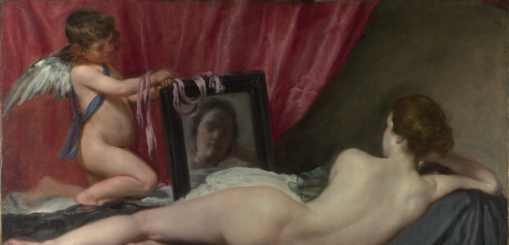
En 2023, Daniel Roseberry, director creativo de Schiaparelli, y el artista F Taylor Colantonio crearon una colección de muebles escultóricos inspirados en la mitología clásica.
El punto de partida fue “The Toilet of Venus”, un motivo neoclásico que representa a Venus en su habitación celestial. La colección transforma esta referencia en objetos que mezclan surrealismo, funcionalidad y artesanía, continuando la tradición de Schiaparelli de unir moda y arte.
LA COLECCIÓN
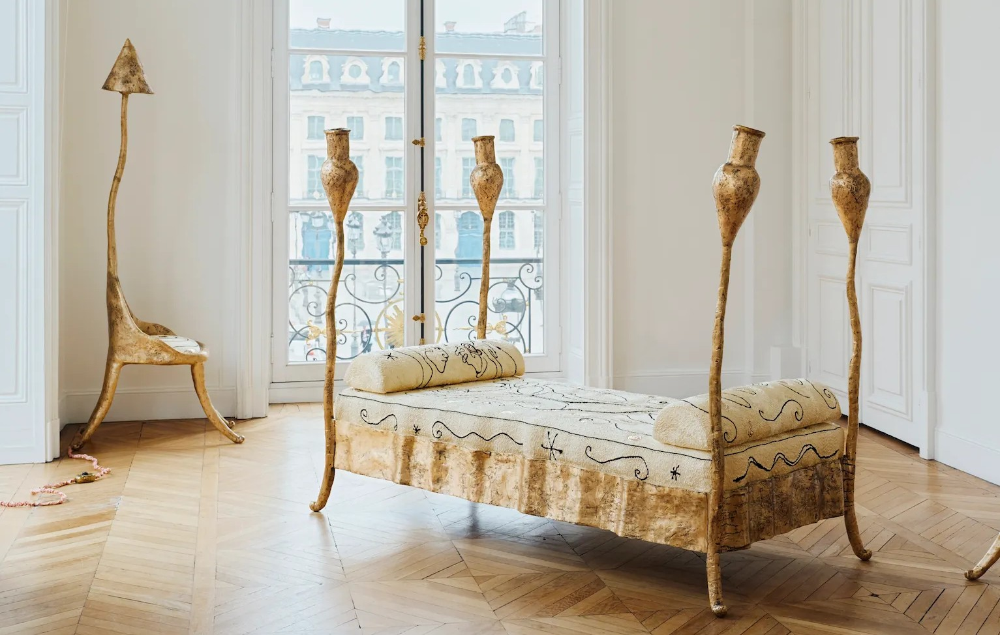
One Long as Twenty
El diván toma su nombre de un fragmento de «Venus y Adonis» de Shakespeare, un hermoso poema
sobre la
renuencia inicial de Adonis a «hacerse amigo» de Venus, su capitulación final y el amor que surgió entre
ellos, y finalmente su muerte prematura.
Las figuras en la cama están inspiradas en Pascal y Pascaline, los dos maniquíes de madera que Elsa
Schiaparelli utilizó como mascotas no oficiales de la Maison, a quienes había casado en una ceremonia nupcial
frente a sus amigos más cercanos. «Creo que es divertido inmortalizar su amor mutuo como el de Venus y
Adonis», dice F. Taylor.
Throne for the Queen-Moon
Bronce macizo, cojín bordado de seda trenzada de Schiaparelli, diseñado por Daniel Roseberry,
con apliques de
cuero dorado, funda de cordón de seda teñida a mano y componentes eléctricos.
Esta silla/lámpara toma su nombre de un verso de la «Oda a un ruiseñor» de John Keats. Keats pasó los últimos
años de su vida en Roma, donde falleció a los 25 años, y Colantonio ha visitado la habitación donde murió.
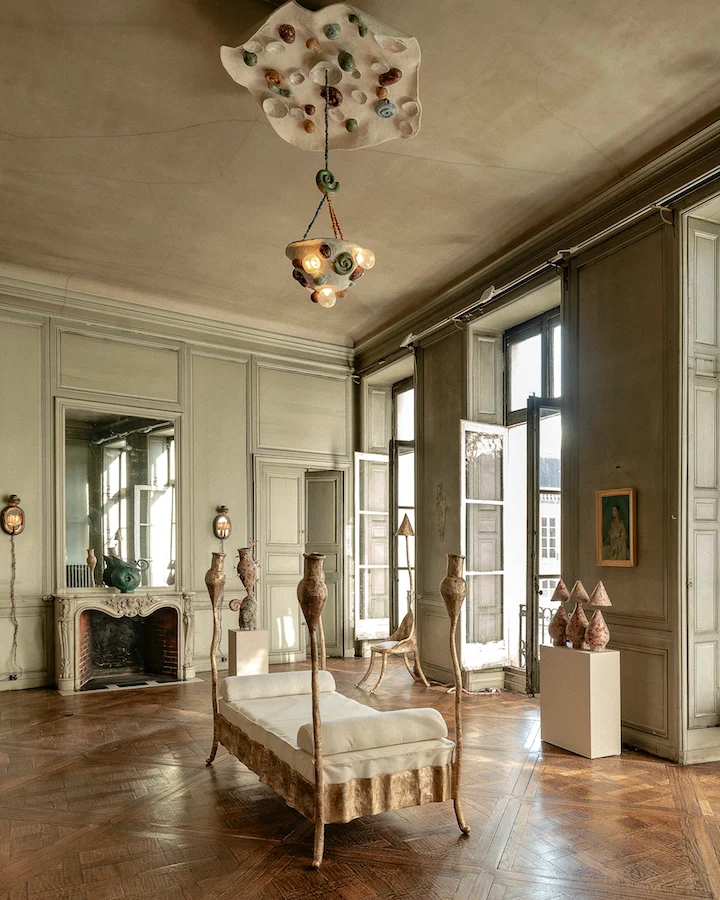
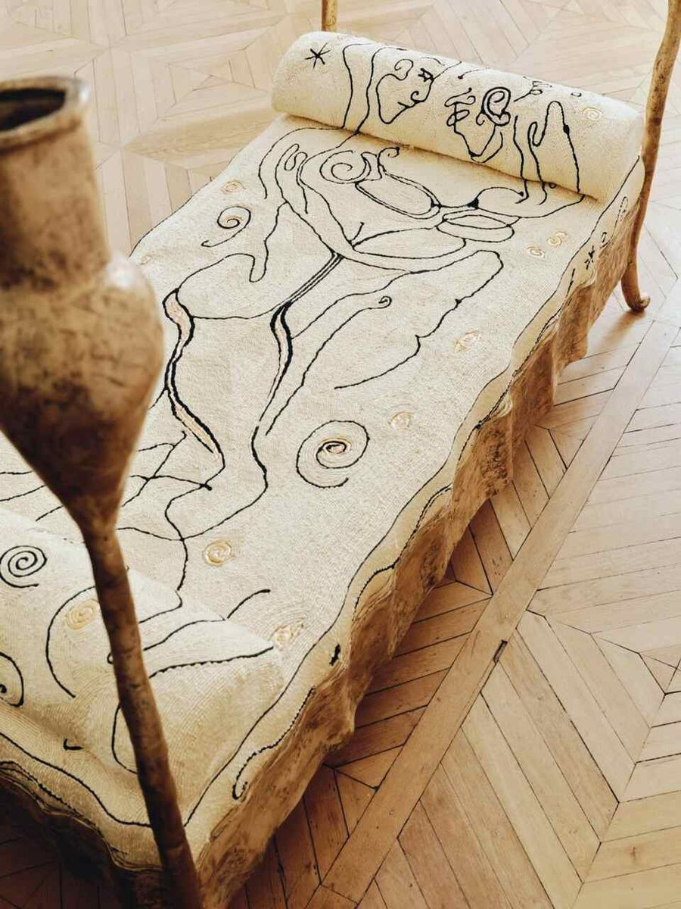
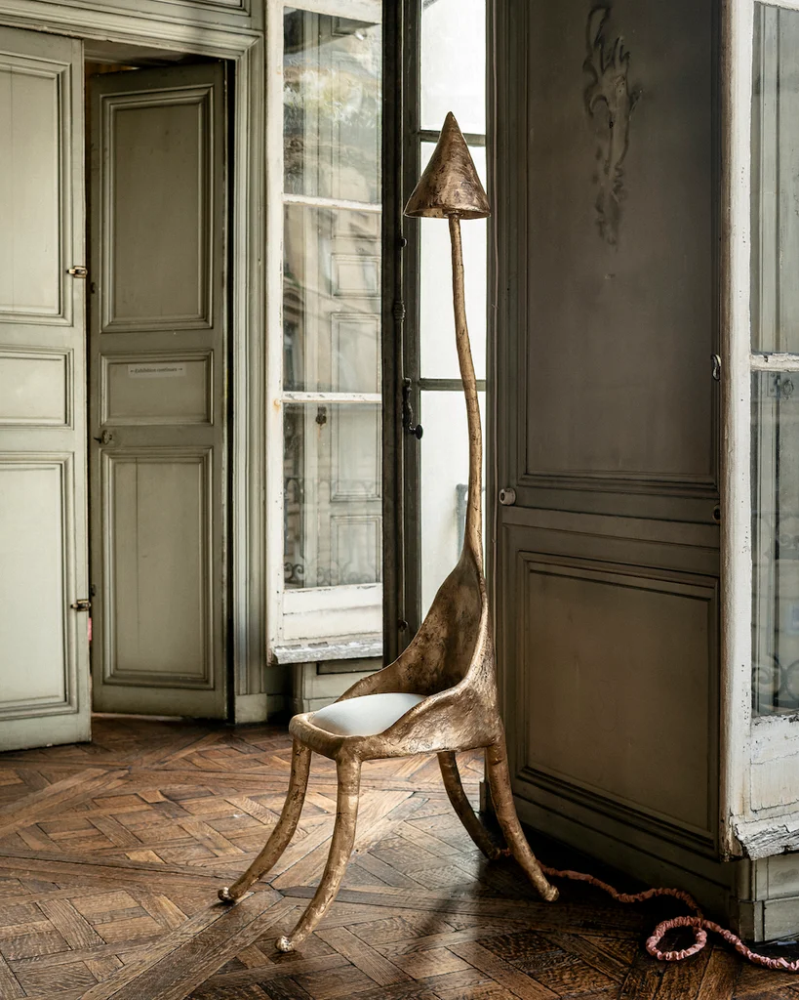
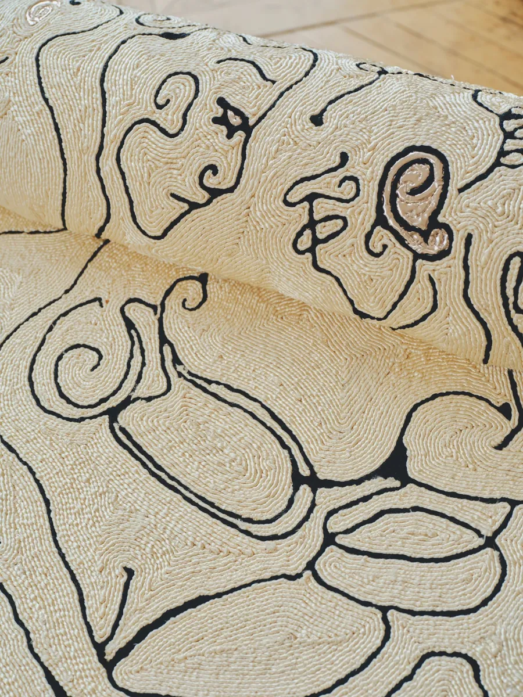
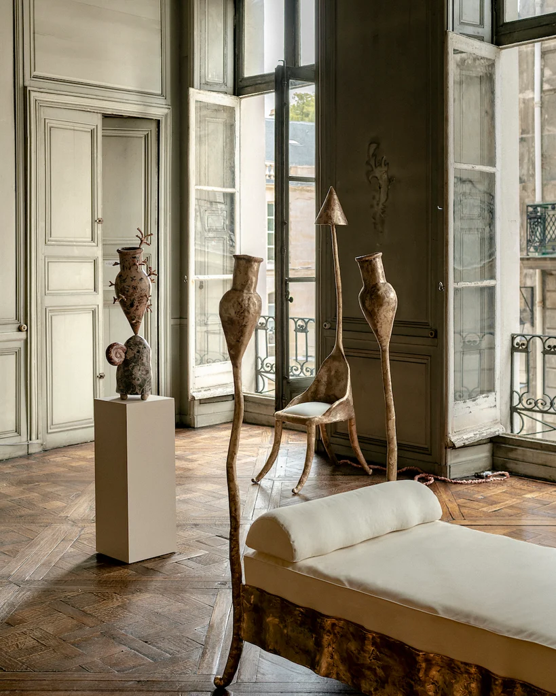
MATERIALES Y PROCESO
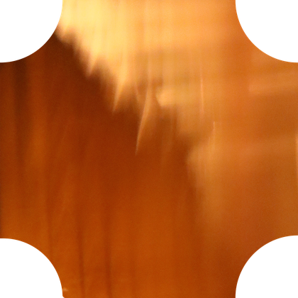
Bronce
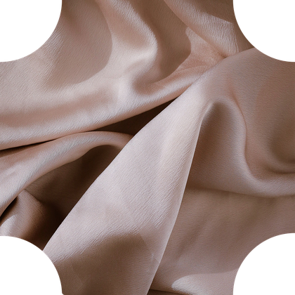
Seda
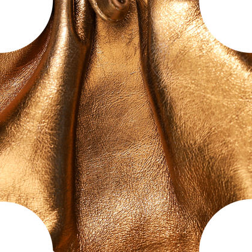
Cuero dorado
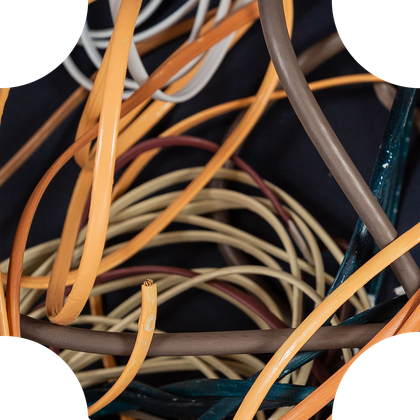
Componentes
eléctricos
Del modelo a la pieza final
Las piezas de bronce fueron realizadas en Italia mediante la antigua técnica de cera perdida. El acabado se
mantiene sin pátina, dejando visibles las características naturales del metal. Los bordados fueron diseñados por
Daniel Roseberry y realizados artesanalmente en el Atelier Schiaparelli de París, utilizando seda cordonada y
aplicaciones de cuero dorado. Cada pieza requiere cientos de horas de trabajo.
Modelo → cera perdida → fundición en bronce → bordado → ensamblaje → pieza final.
CREADORES
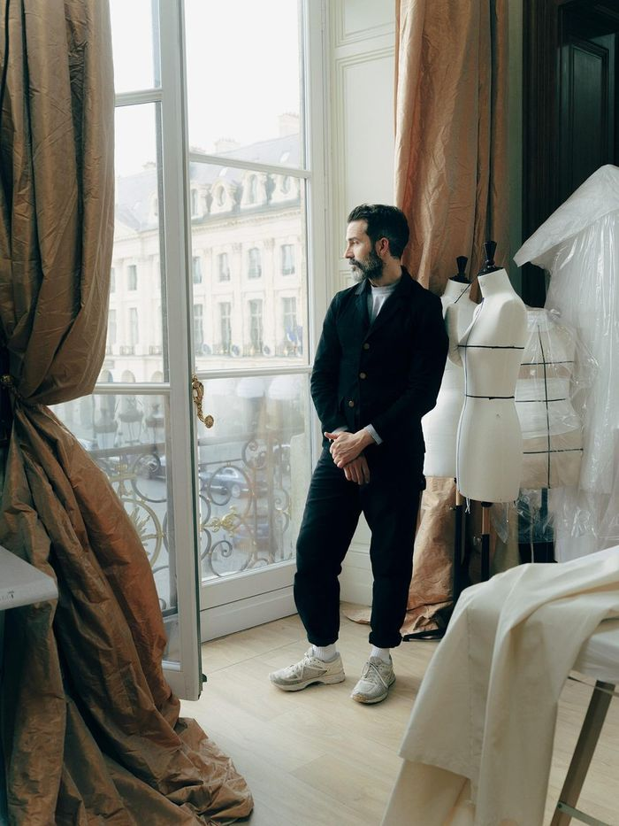
F Taylor Colantonio
F Taylor Colantonio es un artista contemporáneo conocido por su trabajo en escultura y diseño. Su enfoque artístico y escultórico fue fundamental en la creación de la colección de muebles escultóricos de Schiaparelli. Colantonio aportó una visión única que combinó la estética surrealista con la funcionalidad de los objetos, creando piezas que desafían las convenciones del diseño.
Daniel Roseberry
Daniel Roseberry es un diseñador de moda estadounidense, conocido por su trabajo como director creativo de la casa de moda Schiaparelli. Se unió a la marca en 2019 y ha sido reconocido por su enfoque innovador y su capacidad para fusionar la moda con el arte. Su visión ha revitalizado la marca, manteniendo su legado surrealista mientras introduce elementos contemporáneos.
Atelier Schiaparelli
El Atelier Schiaparelli de París fue el lugar donde se realizaron los bordados artesanales de la colección. Este taller especializado en técnicas tradicionales ha sido fundamental para dar vida a las piezas, manteniendo el alto estándar de calidad y artesanía que caracteriza a la marca.